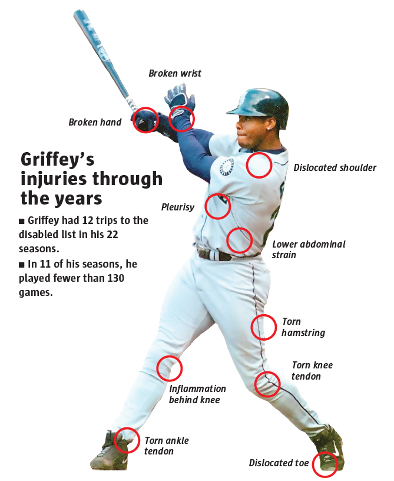
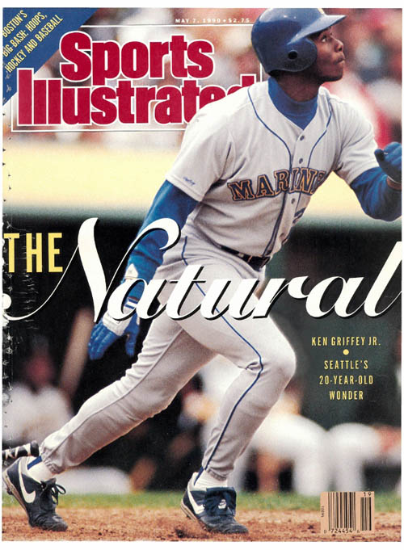

HALL OF FAME | KEN GRIFFEY JR. | CLASS OF 2016
Measuring Greatness
22 years | 2,671 games | 2,781 hits | 1,836 RBI
Ken Griffey Jr. battled injuries for a large part of his career. As a result, he was placed on the disabled list 12 times, forcing him to miss significant playing time. Griffey played in fewer than 130 games in 11 of his 22 total seasons. See a rundown of his injuries and time missed below..
630
HOME RUNS- Griffey hit 40 or more home runs in seven seasons (including five straight from 1996-2000). Only seven players have accomplished that feat.
- 530 of his 630 homers came from the No. 3 spot in the lineup.
- Griffey homered off 407 different pitchers. The most victimized was David Wells, who Griffey homered off of 8 times.
- He played in parts of four decades, one of only 29 players to do so.
Griffey's Home Runs by Season
With Mariners
With Cincinnati Reds; Chicago White Sox
<
<% })}; %>
>
Browse to explore some of Ken Griffey Jr.'s most memorable moments.
<% var notes = {};
json.GriffeyStats_notes.forEach(function(item) {
if (!notes[item.Note]) notes[item.Note] = [];
notes[item.Note].push(item);
});
for (var n in notes) {
var note = notes[n];
note.forEach(function(item) { %>
<%= item.Year %>
<%= item.Note %>
What if? Griffey vs. all-time home run leaders
Take a look at Ken Griffey Jr.'s career home-run trajectory and how it compares to the other five sluggers ahead of him on the all-time list.
<% var players = {};
json.hr_leaders.forEach(function(item) {
if (!players[item.Name]) players[item.Name] = [];
players[item.Name].push(item);
});
var colors = ['grey', 'red', 'blue', 'green', 'purple', '#52C4B1'];
var index = 0;
%>
<% for (var p in players) {
var player = players[p];
player.forEach(function(item) { %>
 <% index++; }); } %>
<% index++; }); } %>
<%=item.Name%>
<%=item.hr%>
Injuries
Ken Griffey Jr. battled injuries for a large part of his career. As a result, he was placed on the disabled list 12 times, forcing him to miss significant playing time. Griffey played in fewer than 130 games in 11 of his 22 total seasons. See a rundown of his injuries and time missed below.

<% var injuries = {};
json.GriffeyStats_injuries.forEach(function(item) {
if (!injuries[item.injury]) injuries[item.injury] = [];
injuries[item.injury].push(item);
}); %>
<% for (var i in injuries) {
var injury = injuries[i];
injury.forEach(function(item) { %>
- <%= item.description %>
Percent of Games Played
Cover Boy
<% for (var i = 1; i < 10; i++) {
if (i == 2) { %>
 <% }
else { %>
<% }
else { %>
 <% }
}; %>
<% }
}; %>
<% var mags = {};
json.GriffeyStats_si.forEach(function(item) {
if (!mags[item.id]) mags[item.id] = [];
mags[item.id].push(item);
}); %>

<% for (var m = 2; m < 10; m++) {
var mag = mags[m];
mag.forEach(function(item) { %>
1990
Griffey’s first S.I. cover is also his most iconic. The magazine calls him “Seattle’s 20-year-old wonder” and likens him to Willie Mays.

<%= item.Year %>
<%= item.Description %>